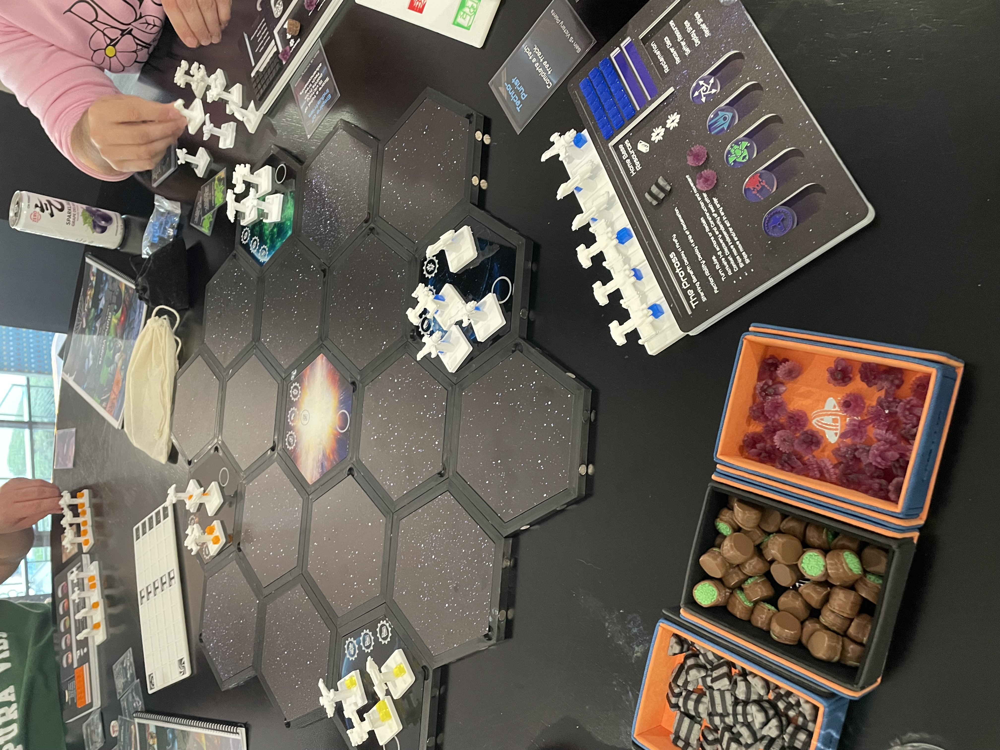
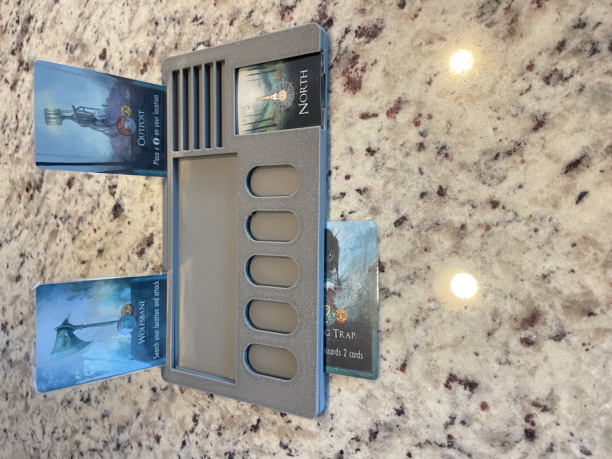
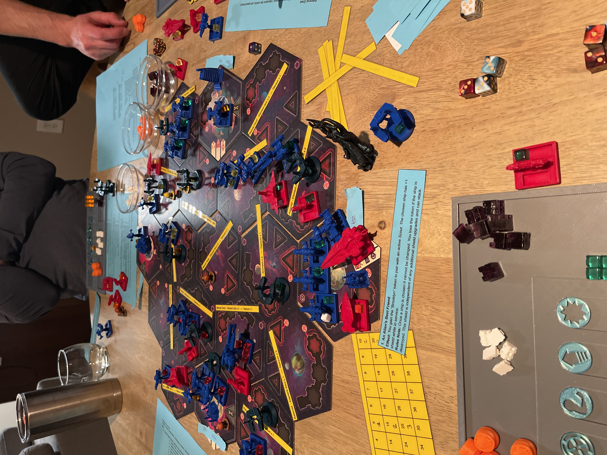
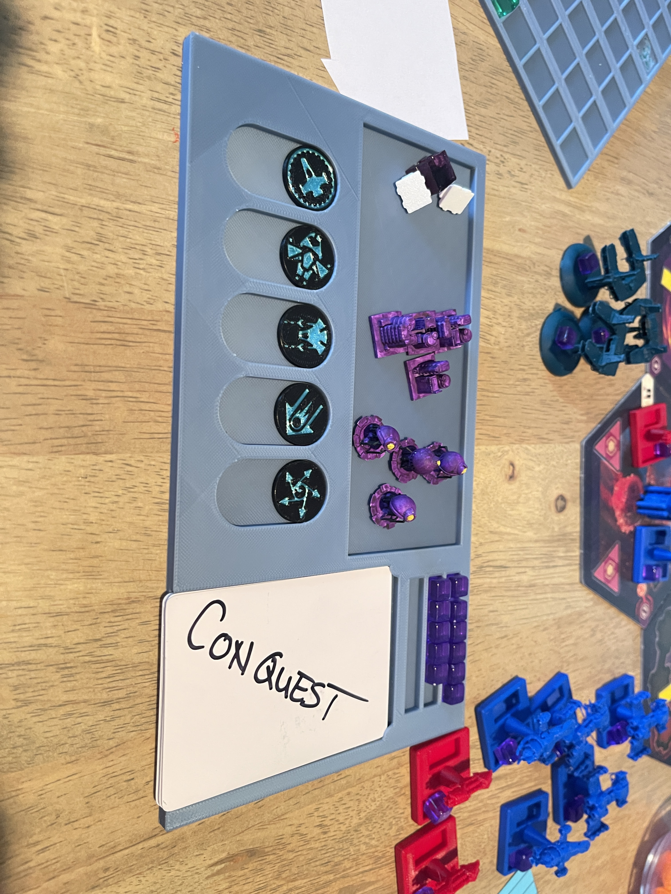
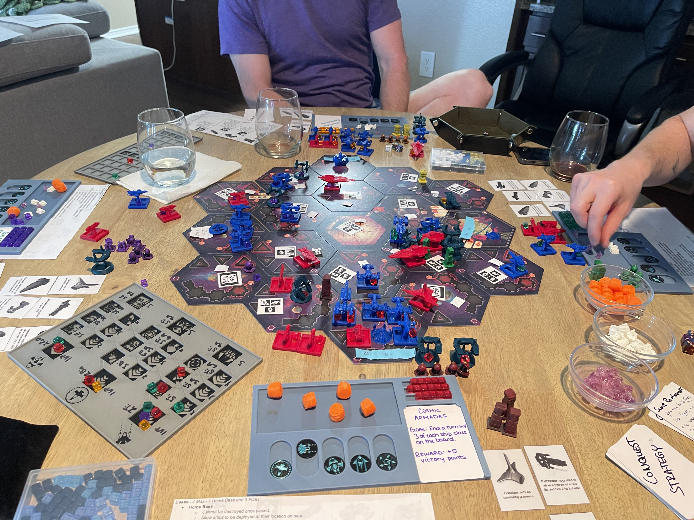

A strategic space exploration and combat board game designed from the ground up using product development principles
Alpha Vidiris is a space-themed strategic board game designed completely from scratch. It supports 4+ players and offers multiple paths to victory through technology, expansion, and strategic combat. The game emphasizes high replay-ability through balanced factions and dynamic mechanics.
Created as a meaningful gift for a close friend going through a difficult time, this project became an exercise in applying rigorous product development principles to physical game design.
Create a completely original board game that was space-themed, supported at least 4 players, encouraged combat but with multiple paths to victory (technology, expansion, strategy), and offered high replay-ability with balanced factions and mechanics.
The game needed to feel fun and engaging every time it was played, be balanced, fair, and strategically deep, and have high-quality, usable boards and pieces.
Key challenge: We had to create everything from scratch — mechanics, player boards, game tiles, pieces, and usability features — and make sure it held up to real-world play-testing.
Started by pulling in mechanics from games we enjoyed, then built original mechanics for combat and replay-ability. Iterated constantly through play-testing, adding risk-reward layers so players could exploit mechanics — but at a cost.
Used hex tiles to encourage exploration and combat. Solved the problem of tiles shifting (a common issue in hex-based games) by designing Fusion360 tile holders with embedded magnets so the map stayed together on any table.
Designed 5 core playable actions (with 2 playable at a time), requiring the board to track actions, resources, and power cubes. Introduced player card mechanics mid-way, which required additional board storage features.
Ran A/B testing with players to refine usability. Final design: a 3-piece magnetic player board that self-contained tokens, cubes, and cards — highly usable and received excellent player feedback.
Alpha Vidiris features original mechanics designed to create strategic depth while maintaining engaging gameplay. The system encourages risk-reward decision-making where players can exploit mechanics, but always at a cost.

All game components were designed in Fusion 360, from the magnetic tile holders to the 3-piece player boards. CAD design allowed for precise prototyping and iterative refinement of physical components.
The prototyping journey involved multiple iterations of physical components, from early paper prototypes to 3D-printed pieces. Each prototype helped refine the game's usability, aesthetics, and functionality through hands-on testing.




Held 15 test sessions, with an iteration after each one. Every session revealed insights that fundamentally shaped mechanics, boards, and usability.
Small pain points (like tiles sliding) became major opportunities for innovation. The magnetic tile holder solution directly addressed real gameplay issues discovered during testing.
Created Alpha Vidiris, a fully playable, balanced, and replay-able board game. The game was a hit with friends, receiving high satisfaction scores during testing and strong engagement with the final design.
Solved real design pain points in board gaming (hex map drift, usability of player boards). Built a product from 0 → 1, using a true product mindset (design, test, feedback, iterate).